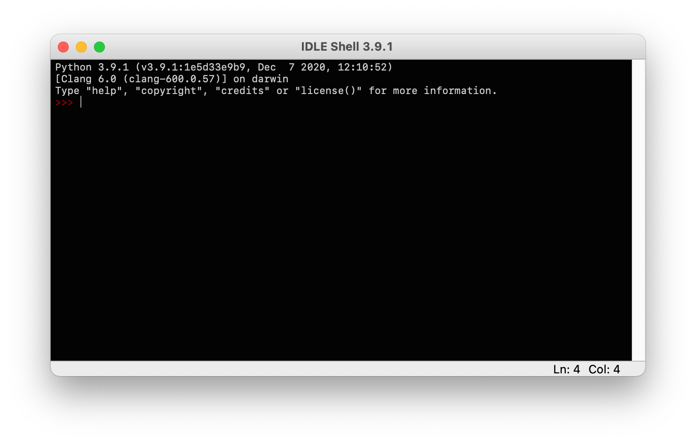
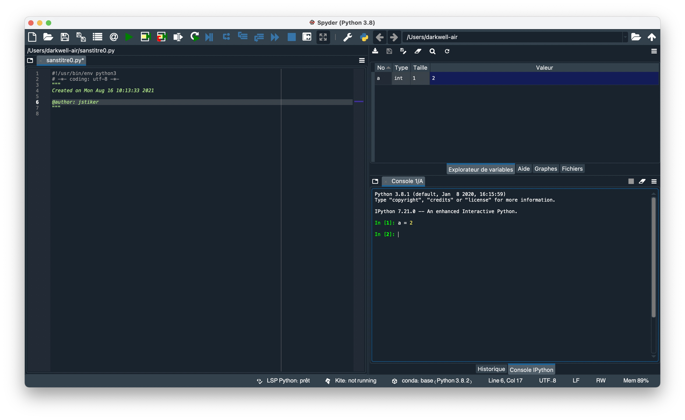
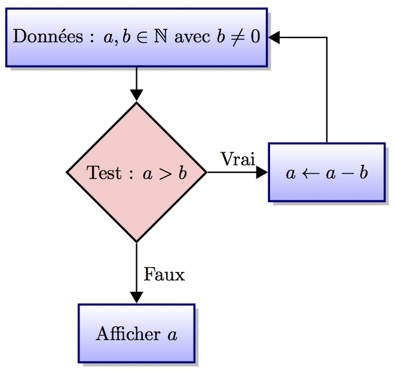
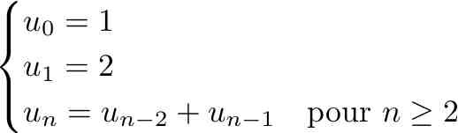

TP1 : La reprise¶
Note
Les objectifs du TP :
Préparer votre environnement de travail et organiser votre dossier utilisateur.
Réviser les bases de Python : Syntaxe, type, variables, branchements conditionnels, boucles et fonctions.
Environnement de travail¶
Dans Windows¶
Dans l’ordre :
Ouvrez votre session.
Dans votre répertoire créer un dossier nommé TP qui contiendra tous les TP de cette année.
Dans ce dossier, créer un dossier TP1 qui contiendra les fichiers de ce TP.
Dans l’IDLE¶
Lancez l’IDLE, Python 3. La fenêtre qui s’ouvre s’appelle “Python Shell” et ressemble peu ou prou à ça :
{kind=link}
Note
Le symbole
>>>
s’appelle le “prompt” ou l”invite de commande”. Il signifie que l’interpréteur est disponible à prendre vos commandes.
Note
La syntaxe de base en Python :
Les commentaires, que vous utiliserez (plus tard) pour annoter votre code afin de le rendre compréhensible et de vous souvenir de ce qu’il fait s’obtiennent avec un #.
# Tout ce qui suit un dièse sur une ligne est ignoréDe manière générale vous taperez une instruction par ligne, sans marqueur à la fin.
Si vous souhaitez taper plusieurs instructions par ligne, il faudra les séparer par ;
L’indentation est syntaxique et non décorative. Un bloc doit être indenté et doit toujours être précédé d’une ligne se terminant par un “:”
if montant > 50: print("Frais de port offerts") else: print("Frais de port : 5 euros") montant += 5
Pyhton sait compter et il nous le prouve.
Exercice : Taper les différentes opérations suivantes (chacune sur une ligne) :
2 + 3; 3 - 5; -2 * 7; 9 ** 2; 3.11 / 2.7; 2.2 / 3.5; 15.0 / 2.0; 15 // 2; 16 % 3
Warning
On utilise la notation anglo-saxonne le point remplace la virgule.
Vous devriez obtenir quelque chose comme ça :
>>> 2 + 3 5 ...
Observez le format des différents résultats.
Quittez l’IDLE et le relancer. Qu’observez-vous ?
Note
Opération |
Résultat |
|---|---|
|
Addition |
|
Soustraction |
|
Multiplication |
|
Puissance |
|
Division |
|
Quotient dans la division euclidienne |
|
Reste dans la division euclidienne |
Warning
A la fermeture de l’IDLE tout ce qui est tapé dans le shell est perdu…
Note
Pour ouvrir/sauver un nouveau fichier vous pouvez utiliser le menu Edit ou Edition. Ou alors utiliser les raccourcis clavier : CTRL - N et CTRL - S.
De même pour l’exécuter vous pouvez utiliser le raccourci F5.
Exercice : Ouvrez une nouvelle fenêtre et sauvez le fichier dans votre dossier TP1 sous le nom : TP1.py. Dans ce fichier inscrivez les commandes suivantes :
1 + 1
print("2")
2 + 3
print(2 * 3)
2 * 3
Enregistrez et exécutez votre fichier. Qu’observez-vous ? Que fait Python exactement ?
Warning
Contrairement à ce qui se passe dans le shell, lorsqu’on exécute le code contenu dans un fichier Python effectue les calculs mais ne les affiche pas. Pour les afficher il faut le demander à l’aide de la commande print.
Exercice : Modifiez le code contenu dans le fichier TP1.py pour qu’à l’exécution il affiche la table de 7 après avoir fait les calculs.
Solution
print(1*7) print(2*7) print(3*7) print(4*7) print(5*7) print(7*7) print(8*7) print(9*7) print(10*7)
Exercice : Remplacez le code du fichier TP1.py par :
for i in range(1,11):
print(i,"* 7 = ", i*7)
Enregistrez et exécutez le avec Python 3. Magique non ? Que signifie ce code d’après vous ?
Dans Spyder¶
Lancez Spyder. La fenêtre qui s’ouvre ressemble à ça :
{kind=link}
Il y a trois panneaux qui constituent la fenêtre :
Une console IPython en bas à droite, prête à interpréter des commandes Python. Ici le prompt n’est pas le même car c’est une console IPython. Il prend la forme
In [1]:avec un numéro d’entrée.Un panneau d’information en haut à droite, qui comporte quatre onglets :
Un explorateur de variables.
Un explorateur de fichiers.
Une rubrique d’aide.
Un visualisateur de graphe.
Un éditeur à gauche dans lequel vous écrirez vos programmes.
Warning
Ne déplacez pas les différents panneaux !! Ne les redimensionnez pas non plus !!
Exercice : Vérifiez que la console réagit exactement comme le shell de l’IDLE, en exécutant quelques commandes.
Exercice : Ouvrez le fichier TP1.py et exécutez le.
Note
Dans Spyder aussi on peut utiliser des raccourcis clavier :
CTRL-O : Ouvrir un fichier.
CTRL-S : Sauvegarder.
CTRL-N : Nouveau fichier.
F5 : Exécuter.
Variables et Affectations¶
Littéraux¶
Note
Un littéral est une valeur écrite dans le programme.
Exemples :
Un entier :
2Un nombre à virgule flottante :
3.14Un nombre complexe :
4jUne chaine de caractères :
"PTSI-B"Une liste d’entiers :
[3, 2, 1]
Lorsque vous tapez un littéral dans la console Python crée, disons, un nouvel “objet”.
>>> (2022, id(2022), type(2022))
(2020, 4342639664, <class 'int'>)
En plus de sa valeur, Python assigne à l’objet un identifiant, ici 4342639664, qui indique où l’objet est gardé en mémoire et un type, ici int pour entier.
Nous verrons plus en détail les types un peu plus loin, parmi les principaux on trouve :
Les entiers
intLes flottants
floatLes chaines de caractères
strLes listes
listLes booléens
boolLes dictionnaires
dict
Variables et affectations¶
L’identifiant d’un objet est assez contraignant à utiliser. On a alors recourt aux variables.
Note
Une variable permet de stocker en mémoire une donnée pour la réutiliser à plusieurs reprises en la désignant par un nom.
Pour donner une valeur à une variable en Python on utilise le symbole = , cette opération s’appelle une affectation de valeur à une variable, ou plus simplement une affectation de variable.
Une affectation crée une liaison entre un nom et une donnée stockée en mémoire.
Warning
Les noms de variable (et aussi : de fonction, de classe…) doivent respecter certaines règles syntaxiques :
Ils ne peuvent contenir que des lettres, des chiffres, des underscores ( _ ), et doivent commencer par une lettre.
La casse est importante, autrement Python fait la différence entre majuscule et minuscule (ma_variable ≠ Ma_VaRiAbLE).
D’après la PEP8, les noms de variables doivent être écrits en minuscules, avec des underscores si nécessaire :
ma_variable.Les noms des constantes doivent être écrits tout en majuscules, avec des underscores si nécessaire :
UNE_CONSTANTE.Certains noms sont réservés par le langage et ne peuvent être utilisés comme nom de variable. Voici la liste pour Python 3 :
andassertbreakclasscontinuedefdelelifelseexceptexecfinallyforfromglobalifimportinislambdanotorpassprintraisereturntrywhileyieldaswith
Dans un programme complexe, il faut impérativement donner des noms significatifs aux variables, de sorte d’en faciciliter la lecture et la compréhension.
Warning
Le symbole = utilisé pour l’affectation ne représente pas une égalité. En particulier il n’est pas symétrique.
In [1]: a = 2
In [2]: a
Out[2]: 2
In [3]: 2 = a
File "<ipython-input-3-7ce9b32fbafc>", line 1
2 = a
^
SyntaxError: cannot assign to literal here. Maybe you meant '==' instead of '='?
Note
Il est d’usage de laisser une espace avant et une autre après le signe =.
Exercice : Dans la console créez une variable mon_annee et affectez lui votre année de naissance. Demandez à Python son identifiant et son type à l’aide des commandes id() et type(). Taper ensuite les différentes commandes suivantes :
mon_annee + 1 ; 3*mon_annee ; mon_annee + mon_annee ;
Exercice : Dans la console tapez les lignes suivantes.
In [4]: a = 3 In [5]: a = a + 2
Que vaut a à votre avis ? Vérifiez en affichant la valeur de a.
In [6]: a += 2 In [7]: a Out[7]: 7
Qu’a fait Python ? Essayez avec d’autres valeurs que 2 et avec d’autres opérateurs que +.
Solution
Il est équivalent de taper a += 2 ou de taper a = a + 2.
Note
On peut abréger certaines affectations.
a -= k
a /= k
a //= k
a %= k
a *= k
a **= k
Exercice : Dans la console, tapez les commandes suivantes.
In [8]: a = 10 In [9]: b = 20 In [10]: a = b In [11]: b = a
Que valent a et b maintenant ? Vérifiez.
Solution
a = 20 et b = 20.
Essayez les commandes suivantes :
In [12]: a = 10 In [13]: b = 20 In [14]: c = a In [15]: a = b In [16]: b = c
Que valent a et b maintenant ? Vérifiez.
Solution
a = 20 et b = 10. On a échangé les valeurs de a et de b.
Observez ce qu’il se passe s’il on fait :
In [17]: a = 10 In [18]: b = 20 In [19]: print("a = ", a, "b = ", b) a = 10 b = 20 In [20]: (a,b) = (b,a) In [21]: print("a = ", a, "b = ", b) a = 20 b = 10
Que s’est-il passé ?
Note
On parle d’affectations multiples lorsqu’on affecte plusieurs variables en même temps. Par exemple :
In [22]: (a, b) = (4, 5) ; (a, b)
Out[22]: (4, 5)
In [23]: (a, b) = (b, a) ; (a, b)
Out[23]: (5, 4)
C’est très pratique pour échanger les valeurs de deux variables.
Exercice : Copiez-collez les instructions suivantes dans le fichier TP1.py et sauvez.
a = 10
b = 20
c = 30
a *= 2
c = b-a
print((a+b)*c+1)
Quel résultat va s’afficher à l’exécution ? Vérifiez.
Solution
1
Types de données simples¶
Note
En Python le typage des données est dynamique : les variables n’ont pas à proprement parler de type, c’est leurs valeurs qui en ont un. Donc au cours de l’exécution une même variable peut contenir des valeurs de types différents.
In [24]: a = 4 In [25]: type(a) Out[25]: int In [26]: a = (3, 8) In [27]: type(a) Out[27]: tuple
Dans Spyder vous pouvez utilisez l’explorateur de variables pour connaître la valeur et le type d’une variable, et l’espace mémoire qui lui est alloué.
In [28]: a = 2 In [29]: b = 'PTSI-B' In [30]: c = True In [31]: d = 10. In [32]: e = [1, 2, 3] In [33]: f = {'cat': 1, 'dog': 2}
Ce qui donnera :
{kind=link}
Les nombres¶
En Python il y a essentiellement quatre types de nombres :
Les entiers de type
intLes flottants de type
floatLes complexes de type
complexLes fractions de type
fraction
Exercice : Qu’observez-vous quant aux types dans les résultats suivants ?
In [34]: a = 1 ; type(a) Out[34]: int In [35]: b = 1. ; type(b) Out[35]: float In [36]: import cmath In [37]: c = 1j ; type( c ) Out[37]: complex In [38]: import fractions In [39]: d = fractions.Fraction(3,8) ; f = fractions.Fraction(6,4) In [40]: print(d+f); type(d) 15/8 Out[40]: fractions.Fraction In [41]: a+2 ; type(a+2) Out[41]: int In [42]: 2*a ;type(2*a) Out[42]: int In [43]: a+2. ; type(a+2.) Out[43]: float In [44]: 2.*a ; type(2.*a) Out[44]: float In [45]: b+2 ; type(b+2) Out[45]: float In [46]: b+2. ; type(b+2.) Out[46]: float In [47]: 2 + c ; type(2+c) Out[47]: complex
Note
- Python applique lui-même des conversions de types, on dit que ces conversions sont implicites.
Le conversions de type numérique
int→float→complexsont les seules conversions implicites de type qui sont autorisées, toutes les autres sont formellement interdites et aboutissent à un message d’erreur. C’est pourquoi on dit que le typage est fort.
Exercice : Que pouvez-vous déduire des résultats suivants ?
In [48]: 2 ** 100 Out[48]: 1267650600228229401496703205376 In [49]: 2. ** 100 Out[49]: 1.2676506002282294e+30
Solution
On peut en déduire que le type int est plus précis que le type float.
Note
Lorsque l’on veut modeliser un problème il faut choisir entre les types int et float pour représenter une donnee numerique.
Si la valeur exacte des calculs est importante les entiers sont plus appropries, de même si les calculs portent sur des donnees d’ordres de grandeur très differents.
Les flottants sont utiles pour repr ́esenter des grandeurs physiques par exemple comme la vitesse, la temperature, le temps, etc…, dont seuls les premiers chiffres sont significatifs.
Chaînes de caractères¶
Note
- Une chaine de caractères, comme son nom l’indique est une série de lettres.
- On peut écrire une chaine de caractère de plusieurs façons :
entre guillemets
entre apostrophes
entre triples guillemets
Le type d’une chaine est
str.
In [50]: s1 = "Bonjour "
In [51]: s2 = ' à '
In [52]: s3 = """ tous."""
In [53]: type(s1)
Out[53]: str
On peut concaténer des chaines de caractère à l’aide de l’opérateur + et les répéter à l’aide de *.
In [54]: print(s1+s2+s3)
Bonjour à tous.
In [55]: print(2*s1)
Bonjour Bonjour
On peut accéder aux différentes lettres d’une chaine de caractère en utilisant des crochets [].
Exercice : Observez les résultats ci-dessous, et en déduire le sens de s[p:q:r].
In [56]: s = "Hello World!" In [57]: print(s) Hello World! In [58]: s[0] Out[58]: 'H' In [59]: s[11] Out[59]: '!' In [60]: s[3:5] Out[60]: 'lo' In [61]: s[:5] Out[61]: 'Hello' In [62]: s[6:] Out[62]: 'World!' In [63]: s[:] Out[63]: 'Hello World!' In [64]: s[-3] Out[64]: 'l' In [65]: s[-3:] Out[65]: 'ld!' In [66]: s[0:8:2] Out[66]: 'HloW' In [67]: s[::3] Out[67]: 'HlWl'
Solution
s[p:q:r] retourne la chaine de caractères formée par les caractères de la chaine s d’indice \(i\) tels que \(p\leq i< q\) avec un pas de \(r\). Si l’on omet le premier ou le dernier indice on considère que respectivement l’on commence à \(0\), ou que l’on va jusqu’au bout de la chaine. A noter que le pas est optionnel.
Exercice : Définissez la chaine de caractère s = "0123456789" et écrivez les instructions qui afficheront les résultats suivants :
'0123456789' '5' '345' '789' '02468' '13579' '036'
Solution
In [68]: s = '0123456789'
In [69]: s
Out[69]: '0123456789'
In [70]: s[5]
Out[70]: '5'
In [71]: s[3:6]
Out[71]: '345'
In [72]: s[7:]
Out[72]: '789'
In [73]: s[::2]
Out[73]: '02468'
In [74]: s[1::2]
Out[74]: '13579'
In [75]: s[:7:3]
Out[75]: '036'
Note
Une liste de commande pour obtenir certains caractères ou pour formater du texte.
Utilité |
Caractère |
|---|---|
Aller à la ligne |
\n |
Tabulation |
\t |
Afficher un anti-slash |
\ |
Afficher une apostrophe |
\’ |
Afficher un guillemet |
\” |
Saut de page |
\f |
Retour en arrière |
\b |
Retour chariot |
\r |
Exercice : Dans la console tapez les instructions qui affichent (en respectant la mise en forme exacte) :
"J'aime beaucoup Python. Même si je ne comprends pas tout."
Solution
In [76]: s = "\"J\'aime beaucoup Python.\n \t Même si je ne comprends pas tout.\""
Note
Les chaines de caractères sont non-mutables !
In [77]: s = 'abcdef'
In [78]: s[1] = a
---------------------------------------------------------------------------
TypeError Traceback (most recent call last)
<ipython-input-78-744bae4c7dee> in <module>
----> 1 s[1] = a
TypeError: 'str' object does not support item assignment
Les booléens¶
Note
En Python les booléens vrai et faux se notent
True,False.Ils sont manipulables avec les opérations standards
+, -, *, \, or, and, notet avec les opérateurs de comparaison.Les opérateurs de comparaison sont :
L’égalité
==L’inégalité
!=Les comparateurs d’ordre :
< <= > >=L’identité
isqui compare lesid().Ils retournent un booléen.
L’évaluation d’une expression booléenne s’arrête dès que le résultat est connu (opérateurs paresseux ou en court-circuit)
In [79]: True and False
Out[79]: False
# Les expressions a et b ne sont pas évaluées
In [80]: a = True; b = False; True and (a or b)
Out[80]: True
In [81]: not False
Out[81]: True
Exercice : Tapez dans la console et évaluez les instructions suivantes.
True + True ; True + False ; True * False ; False + False ; False * False 2 < 3 2 != 3 s1 = "trois" ; s2 = "sept" s1 > s2 2 + 3 == 5 a = 2 ; b = 2. a == b a is b a = 2 ; b = 2 a == b a is b 1 < 2 and 3 <= 5 not(3 > 4) 'a'+'b' == 'ab' or 7 < 3
Solution
In [82]: True + True Out[82]: 2 In [83]: True + False Out[83]: 1 In [84]: True * False Out[84]: 0 In [85]: False + False Out[85]: 0 In [86]: False * False Out[86]: 0 In [87]: 2 < 3 Out[87]: True In [88]: 2 != 3 Out[88]: True In [89]: s1 = "trois" ; s2 = "sept" # Ici c'est l'ordre lexicographique In [90]: s1 > s2 Out[90]: True In [91]: 2 + 3 == 5 Out[91]: True In [92]: a = 2 ; b = 2. In [93]: a == b Out[93]: True In [94]: a is b Out[94]: False In [95]: a = 2 ; b = 2 In [96]: a == b Out[96]: True In [97]: a is b Out[97]: True In [98]: 1 < 2 and 3 <= 5 Out[98]: True In [99]: not(3 > 4) Out[99]: True In [100]: 'a'+'b' == 'ab' or 7 < 3 Out[100]: True
Conversion de types¶
Note
En Python on peut faire certaines conversions de type, pour transformer un nombre en chaine de caractère ou l’inverse par exemple.
In [101]: s = str(123) ; print(s) ; type(s)
123
Out[101]: str
In [102]: s = int(s) ; print(s) ; type(s)
123
Out[102]: int
Exercice : Dans la console essayez les conversions suivantes :
float(123) ; bool(0) ; str(True) ; float(’1.22’) ; int(1.23) bool(1) ; bool(’abc’) ; float(’123’) ; int(True) ; str(123) ; bool(’’) float(True) ; int(False) ; str(1.23) ; bool(1.23) ; float(False)
Entrées-sorties¶
Note
Pour afficher un résultat dans la console on utilise la commande print
In [103]: a = 3
In [104]: b = 2
In [105]: print("La somme de {} et {} est {}".format(a,b,a+b))
La somme de 3 et 2 est 5
La méthode de chaine de caractères format permet de formater une chaine avec des expressions. On peut aussi utiliser les f-string pour faire la même chose. Une f-string est une chaine de caractères préfixée par f ou F :
In [106]: a = 3
In [107]: b = 2
In [108]: print(f"Le produit de {a} et {b} est {a*b}")
Le produit de 3 et 2 est 6
La fonction print est très pratique pour afficher des résultats intermédiaires lorsque l’on cherche à déboguer un programme. Bien entendu Python offre mieux pour le logging.
Pour lire une entrée au clavier on utilise la commande input en Python 3 le résultat est un chaine de caractère.
n = int(input("Entrez un nombre : ")) ; print(n/2)
Pour en savoir plus sur les entrées-sorties c’est par ici.
Exercice : Ecrire dans un fichier un programme qui demande à l’utilisateur son nom, son prénom et son année de naissance et qui retourne le résultat suivant sous la forme :
Nom : Leponge Prénom : Bob Année de naissance : 1900
Solution
nom = input("Entrez votre nom : ") prenom = input("Entrez votre prénom : ") annee = input("Entrez votre année de naissance : ") print("Nom : {}\rPrénom : {} \rAnnée de naissance : {}".format(nom,prenom,annee))
Exercice : Ecrire dans un fichier un programme qui demande à l’utilisateur le rayon d’une sphère et qui retourne le résultat suivant sous la forme :
Entrez le rayon en cm : 5 Une sphere de rayon 5.0 cm a pour surface : 314.159265359 cm2 Une boule de rayon 5.0 cm a pour volume : 523.5987755982989 cm3
Solution
from math import pi
rayon = float(input("Entrez le rayon en cm : "))
s = 4*pi*rayon**2
v = 4/3*pi*rayon**3
print(f"Une sphere de rayon {rayon} cm a pour surface : {s} cm2.")
print(f"Une boule de rayon {rayon} cm a pour volume : {v} cm3.")
Exercice : Ecrire dans un fichier un programme qui demande à l’utilisateur son nom et son prénom et qui retourne ses initiales.
Solution
nom = input("Entrez votre nom : ")
prenom = input("Entrez votre prenom : ")
print("Vos initiales sont : {}.{}.".format(nom[0],prenom[0]))
Structures de contrôle¶
Instruction conditionnelle¶
Note
Les instructions conditionnelles sont essentielles en informatique. Elles permettent d’exécuter des instructions sous réserve que certaines soient vérifiées.
Un exemple très simple, dans le quel on test si la valeur d’une variable est plus petite que 3, et si c’est le cas on affiche qu’elle l’est.
>>> if a < 3 :
... print("a est plus petit que 3")
Cette structure de condition est dite minimale. Il en existe des plus complexes.
Warning
L’indentation est essentielle ! L’indentation c’est le décalage marqué sur la seconde ligne. Il est égal à 4 espaces (c’est mieux) ou une tabulation. On ne mélange pas les espaces et les tabulations !
Note
Une structure conditionnelle complète suit le schéma suivant :
if condition_1: instructions_1 elif condition_2: instructions_2 elif condition_3: instructions_3 ... else: instructions_else
Les instructions de la première condition évaluée à True sont exécutées, si aucune ne l’est on exécute instructions_else .
Exercice : Si x, y et z sont des nombres, quelle est la valeur de m à la fin de cet algorithme ?:
m = 0 if x > y: if x > z: m = x else: m = z else: if y > z: m = y else: m = z
Vérifiez le.
Exercice : Ecrire un programme qui prend comme entrée un entier n et qui affiche le double s’il est impair, le triple s’il est pair mais pas divisible par 4 et sa moitié sinon.
Solution
if n % 2 == 1: print(2*n) elif n % 4 ==0: print(n//2) else: print(3*n)
Exercice : Ecrire un programme qui demande les trois coefficients réels d’un trinôme \(ax^2+bx+c\) à l’utilisateur et qui retourne une phrase indiquant le nombre de racines réelles distinctes de ce trinôme, après avoir vérifié qu’il s’agissait bien d’un polynôme du second degré.
Solution
a = float(input("Entrez le coefficient a : ")) b = float(input("Entrez le coefficient b : ")) c = float(input("Entrez le coefficient c : ")) if a == 0: print("Ce n'est pas un polynôme de degré deux !") else: delta = b**2 - 4*a*c if delta > 0: print("Le trinôme {}*x^2+{}*x+{} possède deux racines réelles distinctes.".format(a,b,c)) elif delta == 0: print("Le trinôme {}*x^2+{}*x+{} possède une racine réelle.".format(a,b,c)) else: print("Le trinôme {}*x^2+{}*x+{} ne possède pas de racines réelles.".format(a,b,c))
Exercice : Ecrire un programme qui demande une année à l’utilisateur et qui indique si elle est bissextile ou non. Une année est bissextile par définition si sa valeur vérifie l’une des conditions :
être multiple de 4 mais pas de 100 ;
être multiple de 400.
Solution
annee = int(input("Entrez une année : ")) if annee % 4 != 0: print("L'année {} n'est pas bissextile".format(annee)}) elif annee % 100 != 0: print("L'année {} est bissextile".format(annee)}) elif annee % 400 != 0: print("L'année {} n'est pas bissextile".format(annee)}) else: print("L'année {} est bissextile".format(annee)})
Solution 2 : avec les mots or et and
annee = input("Saisissez une année : ") # L'utilisateur fournit une année à tester annee = int(annee) # Erreur si l'utilisateur n'a pas saisi un nombre if annee % 400 == 0 or (annee % 4 == 0 and annee % 100 != 0): print("L'année saisie est bissextile.") else: print("L'année saisie n'est pas bissextile.")
Petit problème : Ecrire un programme qui retourne le plus grand nombre parmi les quatre nombres w, x, y et z.
Solution 2 : avec les mots or et and
maximum = w if x > w: maximum = x if y > x or y > z: maximum = y elif z > x: maximum = z else: if y > w or y > z: maximum = y elif z > w: maximum = z return maximum
Boucle while¶
Note
Les boucles permettent de répéter certaines opérations autant de fois que nécessaire. Nous en verrons de deux sortes.
Une boucle while permet de répéter un bloc d’instructions tant qu’une condition est vérifiée.
La structure d’une boucle while (tant que en anglais) est la suivante :
while condition: # Tant que la condition est remplie effectuer les instructions instructions
Un exemple : La table de 7.
i = 0 # On initialise notre compteur while i < 10: # Tant que le compteur i est strictement plus petit que 10 faire : print("{} * 7 = {}".format(i+1,(i+1)*7)) # Afficher le résultat i += 1 # Incrémenter le compteur
Warning
Si dans ce programme vous oubliez d’incrémenter le compteur il ne sera jamais supérieur ou égale à 10 et votre programme ne s’arrêtera jamais !! On appelle ça une boucle infinie. Si vous avez lancé une boucle infinie vous pouvez l’arrêter avec CTRL - C si vous êtes dans un shell ou à l’aide du bouton triangulaire orange dans la console de Syder.
Exercice : Ecrire un programme qui calcule la somme des \(100\) premiers entiers.
Solution
somme = 0 #Initialisation de la somme
i=0 #Initialisation du compteur
while i <= 100: #Tant que i est plus petit que 20 faire
somme += i #Ajouter i à somme
i += 1 #Incrémenter i de 1
- Exercice : Que vaut
sommeà la fin ? somme = 0 i=0 while i <= 20: if i % 2 == 0: somme += i i += 1
Réécrire ce code sans la structure conditionnelle.
Solution
somme contient la somme des nombres pairs de \(0\) à \(20\).
somme = 0 #Initialisation de la somme i=0 #Initialisation du compteur while i <= 20: #Tant que i est plus petit que 20 faire somme += i #Ajouter i à somme i += 2 #Incrémenter i de 2
Exercice : (Racine carrée entière) Ecrire un programme qui demande à l’utilisateur un nombre entier n , qui affiche l’entier dont le carré est l’entier, inférieur ou égal, le plus proche de n. Par exemple il affichera 2 si l’utilisateur rentre 7.
Solution
n = int(input("Entrez un entier : "))
i = 0 # Initialisation du compteur
while (i+1) ** 2 <= n: #Tant que le carré du compteur i est plus petit que n faire
i += 1 # Incrémenter i
print(" La racine carrée entière de {} est : {}".format(n, i)
Exercice : Ecrire un programme qui calcule la somme des multiples de 3 ou de 5 strictement inférieurs à 1000.
Solution
In [109]: i=0
In [110]: somme = 0
In [111]: while i < 1000:
.....: if i % 3 == 0 or i % 5 == 0:
.....: somme += i
.....: i += 1
.....:
In [112]: somme
Out[112]: 233168
- Exercice : (L’algorithme des différences successives)
Que calcule cet algorithhme ? Le modifier pour obtenir la division euclidienne de
aparb.
{kind=link}
Solution
q = 0 r = a while b < r: q += 1 r -= b
- Petit problème 1 :
On définit la suite de Fibonacci par :
Calculer la somme des termes pairs plus petit que quatre millions.
{kind=link}
Solution
In [113]: a = 1 In [114]: b = 2 In [115]: somme = b In [116]: while b <= 4*10**6: .....: a, b = b, a + b .....: if b % 2 == 0: .....: somme += b .....: In [117]: somme Out[117]: 4613732
Boucle for¶
Note
La structure d’une boucle for (pour en anglais) est la suivante :
for element in iterable: # Pour tous les éléments de l'itérable faire : instructions
La boucle for permet d’effectuer un bloc d’instructions pendant que element prend successivement toutes les valeurs dans itérable .
Un exemple : Avec une chaine de caractères comme itérable.
chaine = "Vive la PTSI-B!" for lettre in chaine: # Pour chaque lettre dans chaine faire : print(lettre) # Afficher la lettre
Notez bien que c’est la commande for qui a crée le variable lettre.
Exercice : Dans la console écrire un programme qui affiche toutes les consonnes de la chaine “Vive les TP Python en PTSI-B” et qui affiche un underscore à la place des voyelles.
Solution
chaine = "Vive les TP Python en PTSI-B" for lettre in chaine: if lettre not in "AEIOUYaeiouy": print(lettre) else: print("_")
Note
La fonction range est très utile, elle génère des itérables constitués par des suites de nombres, on l’utilise comme suit :
range(m) # Ensemble des entiers de :math:`0` à :math:`m-1`
range(n, m) # Ensemble des entiers de :math:`n` à :math:`m-1`
range(n, m, p) # Ensemble des entiers de :math:`n` à :math:`m-1` par pas de :math:`p`
Exercice : Dans la console écrire un programme qui affiche la somme des carrés des entiers de 10 à 38, puis la somme des cubes des entiers impaires de 10 à 38, qui utilise l’expression range().
Solution
In [118]: somme = 0 In [119]: for i in range(10,39): .....: somme += i**2 .....: In [120]: somme Out[120]: 18734 In [121]: somme2 = 0 In [122]: for i in range(11,15,2): .....: somme2 += i**3 .....: In [123]: somme2 Out[123]: 3528
Exercice : Dans la console écrire un programme qui calcule \(5^{245}\) en effectuant toutes les multiplications. Comparer avec 5**245.
Solution
In [124]: resultat = 5 In [125]: for _ in range(1, 245): .....: resultat *= 5 .....: In [126]: resultat Out[126]: 1768687320083342259279124861501521832164556874636550427652854470690527601287665061472564736711124628799600085800171451104664596264311182682860135173541493713855743408203125
Exercice : Dans la console écrire un programme qui calcule \(50!\) en effectuant toutes les multiplications. Comparer le résultat avec la fonction factorial du module math. Calculer la somme des décimales de ce nombre.
Solution
In [127]: resultat = 1 In [128]: for i in range(2,51): .....: resultat *= i .....: In [129]: resultat Out[129]: 30414093201713378043612608166064768844377641568960512000000000000 # Première méthode In [130]: somme = 0 In [131]: n = resultat In [132]: while n > 0: .....: somme += (n % 10) .....: n = n // 10 .....: In [133]: print("La somme des décimales est : {}".format(somme)) La somme des décimales est : 216 # Seconde méthode In [134]: somme2 = 0 In [135]: chaine = str(resultat) In [136]: for chiffre in chaine: somme2 += int(chiffre) In [137]: somme2 Out[137]: 216
Les fonctions¶
Définition et appels¶
Note
Une fonction permet d’appeler un groupe d’instructions à plusieurs reprises, sans avoir à le réécrire. Vous connaissez déjà un certain nombre de fonctions comme print, input ou encore range.
En Python une fonction se déclare à l’aide du mot-clé
def.Par exemple :
def ma_fonction(arg_1,...,arg_n): instruction 1 ... #Les instructions forment le **corps** de la fonction. instruction p
Observons ce qui se passe en tapant :
In [138]: def double(x): .....: print(2*x) .....: double(5) .....: 10Dans cet exemple la fonction
doubleprend un argument, ici appeléx. Cet argument n’a pas detypeà priori. On peut essayer avec différentstypede donnée pourx. Comme par exemple :In [139]: double(5) 10 In [140]: double(5.) 10.0 In [141]: double("x") xxTaper les commandes suivantes dans la console.
In [142]: def double_bis(x): .....: return 2*x .....: In [143]: double_bis(2) Out[143]: 4 In [144]: n = double_bis(2) In [145]: n # On a affecté la valeur retournée par la fonction à n Out[145]: 4 In [146]: m = double(2) 4 In [147]: m In [148]: print(m) # Il n'y a rien dans m NoneQu’elle est la différence ?
La fonction
doubleaffiche le résultat, la fonctiondouble_bisretourne une valeur. Pour renvoyez un résultat il faut utiliser le mot-cléreturn.
On peut noter que la console IPython fait bien la différence.
Danger
Ne confondez surtout pas afficher et retourner, ou return et print.
Si vous oubliez le mot-clé return, il ne se passera rien, ou plutôt votre fonction renverra None.
>>> def double_ter(x):
... 2*x
...
>>> double_ter(2)
>>> print(double_ter(2))
None
>>>
En informatique, une fonction qui ne retourne rien s’appelle une procédure.
Note
D’après la PEP8, les noms de fonctions doivent être écrits en minuscules, avec des underscores si nécessaire.
De bonnes pratiques !
Lorsque l’on définit une fonction, il est impératif de l’accompagner d’une docstring, c’est-à-dire d’une description de ce que fait la fonction, des arguments qu’elle prend et de ce qu’elle retourne le cas échéant (on ajoute aussi les exceptions qu’elle peut soulever mais nous verrons ça plus tard). Une dernière chose : il est d’usage d’écrire cette docstring en anglais… La PEP-257 décrit la bonne manière d’écrire une docstring en python, mais je préfère suivre les conseils donnés dans le guide Google.
Voici un exemple de docstring :
def square_root(x): """ Calculate the square root of a number. Args: x : the positive positive number to get the square root of. Returns: the square root of x. Raises: TypeError: if x is not a number. ValueError: if x is negative. """
Vous devez écrire une docstring pour chaque fonction que vous définirez !
Pour aller plus loin encore, on peut utiliser les annotations de fonctions, ou typing. Il s’agit de spécifier le type des arguments passés à la fonction et de spécifier le type de ce que la fonction retourne le cas échéant de la manière suivante :
def ma_fonction(arg_1:type_1,...,arg_n:type_n)->type_sortie:
Par exemple pour la fonction square_root on aurait :
def square_root(x:float)->float:
Notez que ce ne sont que des indications, Python ne vérifie rien et ne dira rien si vous ne respectez pas vos propres définitions. Pour en savoir plus c’est par ici.
Exercice : Ecrire une fonction somme_n_entiers qui prend comme argument un entier n et qui retourne la somme des \(n\) premiers entiers.
Solution
def somme_n_entiers(n:int)->int: """ Calculate the sum of the n firsts integers Args: n : the last integer of the sum. Returns: 1 + ... + n. """ s = 0 for i in range(n+1): s += i return s
Exercice : Ecrire une fonction percentage qui prend deux nombres comme arguments score et total et qui retourne le pourcentage de réussite que représente score.
Solution
def percentage(total:float, score:float)->float: """ calculate the percentage corresponding to a grade. Args: total : a postive number > 0 score : a number 0 <= score <= total Returns: the percentage corresponding to the score obtained. """ return 100*score/total
Note
Lorsque l’on écrit une fonction, on peut vouloir vérifier que des conditions qui sont censées être satisfaites le sont effectivement, à l’aide du mécanisme d’assertion proposé par Python.
Par exemple, voici comment utiliser la fonction assert pour vérifier que les préconditions de la fonction percentage sont bien vérifiées :
def percentage(total:float, score:float)->float: """ calculate the percentage corresponding to a grade. Args: total : a postive number > 0 score : a number 0 <= score <= total Returns: the percentage corresponding to the score obtained. """ assert type(score) == float, "score must be a float number." assert type(total) == float, "total must be a float number." assert total > 0, "total must be strictly positive" assert score >= 0, "score must be positive." assert total >= score, "score must be smaller than total." return 100*score/total
Copiez-collez ce code et essayez le avec des préconditions non respectées, vous verrez que l’exécution du code s’interrompt avec la levée d’une exceprion de type AssertionError, et que le message d’erreur prévu s’affiche, ce que nous n’aurions pas obtenu en utilisant des if.
Dans la vraie vie, on n’’utilise des assertions qu’en phase de développement jamais en production, à moins que la fonction soit interne à un module, donc votre code doit fonctionner même si on les supprime.
Exercice : Ecrire une fonction factorielle qui prend comme argument un entier n et qui retourne \(n!\), après avoir testé que \(n\) est bien un entier positif.
Solution
def factorielle(n:int)->int: """ Calculate the factorial of n Args: n : the positive integer to get the factorial Returns: 1 x ... x n. """ assert type(n) == int, "n must be an integer." assert n >= 0, "n must be positive" f = 1 for i in range(1, n+1): f *= i return f
Exercice : Ecrire une fonction syracuse1 qui prend comme argument un entier N positif et qui retourne \(u_{100}\) où la suite \((u_k)_{k\in\mathbb{N}}\) est définie par \(u_0 = N\) et pour tout \(k\in\mathbb{N}\), \(u_{k+1} = u_k / 2\) si \(u_k\) est pair et sinon \(u_{k+1}=3 u_k + 1\). Vous testerez que :code:`N`est bien un entier positif.
Solution
def syracuse1(N:int)->int: """ Calculate the hundredth term of the syracuse sequence of N Args: N : the integer u_0 > 0 Returns: u_100 """ assert type(N) == int, "N must be an integer." assert N >=0, "N must be positive." u = N for _ in range(100): if u % 2 == 0: u = u // 2 else: u = 3*u+1 return u
Exercice : Ecrire une fonction fibo qui prend comme argument un entier n et qui retourne le n-ième terme de la suite de Fibonacci. Après avoir testé que :code:`n`est bien un entier positif.
Solution
def fibo(n:int)->int: """ Calculate the n-th term of the Fibonacci sequence. Args: n : a positive integer Returns: u_n """ assert type(n) == int, "n must be an integer." assert n >= 0, "n must be positive." u = 1 v = 2 for _ in range(n): u, v = v, u+v return u
Exercice : Ecrire une fonction is_positive qui prend comme argument un réel x est qui renvoie True si x est positif et False sinon. Après avoir testé que x est bien un nombre flottant.
Solution
def is_positive(x:float)->bool: """ Test if x is positive Args: x : the number to determine is positive or not. Returns: True if x is positive, and False otherwise. """ assert type(x) == float, "x must be a float number." return x >= 0
Exercice : Ecrire une fonction somme_dec qui prend comme argument un entier n positif et qui retourne la somme de ses décimales. Après avoir testé un que n est un entier.
Solution
def somme_dec(n:int)->int: """ Calculate the sum of the digits of n. Args: n : the number of which we will calculate the sum of the digits. Returns: The sum of the digits of n """ assert type(n) == int, "n must be an integer." assert n >= 0, "n must be positive." s = 0 while n > 0: s += n % 10 n //= 10 return s
Exercice : Ecrire une fonction is_palindrome qui prend comme argument une chaine de caractères et qui retourne True si cette chaine est un palindrome et False sinon. Après avoir testé que :code:`chaine`est bien une chaine de caractères de longueur supérieure ou égale à deux.
Solution
def is_palindrome(chaine:str)->bool: """ Test if a string is a palindrome. Args: chaine : a string to test. Returns: True if chain is a palindrome, and False otherwise. """ assert type(chaine) == str, "type(chaine) must be str." assert len(chaine) >= 2, "len(chaine) must be greater than 2." i = 0 res = True while res and i < len(chaine)//2: if chaine[i] != chaine[-(i+1)]: res = False i += 1 return res
Note
Une fonction peut renvoyer des données de tout type.
Arguments¶
Note
Une fonction peut ne pas prendre d’argument ou en prendre plusieurs.
Un exemple de fonction sans argument :
def table7(): """ Show the 7 times table Args: None Returns: None """ for i in range(11): print(f"{i} * 7 = {i*7}")
Avec deux ou trois arguments :
def pythagore(a, b): """ Calculate the hypothenuse of the right triangle of legs a and b Args: a : positive float b : positive float Returns: the square of the length of the hypotenuse of the right triangle of legs a and b. """ assert type(a) == float and type(b) == float," a and b must be float numbers." assert a >= 0 and b >= 0, "a and b must be positives." return a**2+b**2 def is_pythagore(a, b, c): """ Determines if the triangle (a , b, c) is right at (a, b) Args: a : positive float b : positive float Returns: The square of the length of the hypotenuse of sides a and b """ assert type(a) == float and type(b) == float," a and b must be float numbers." assert a >= 0 and b >= 0, "a and b must be positives." rep = False if c == pythagore(a, b): # Ici on fait appelle à la fonction définie avant rep = True return rep
Exercice : Ecrire une fonction somme_cube qui prend deux entiers p et q comme arguments et qui retourne \(\displaystyle\sum_{p}^q k^3\) .
Solution
def somme_cube(p:int, q:int)->int: """ Calculate the sum of k^3 from p to q Args: p : a positive integer q : a positive integer p < q Returns: The sum of k^3 from p to q """ assert type(p) == int and type(q) == int, "p and q must be integer." assert p >= 0, "p must be positive." assert q >= p, "q must be greater than p" s = 0 for k in range(p,q+1): s += k**3 return s
Exercice : Ecrire une fonction max2 qui prend deux nombres réels en argument et qui retourne le maximum des deux.
Solution
def max2(x:float, y:float)->float: """ Determines which of x and y is greater. Args: x : a float number y : a float number Returns: max(x,y) """ assert type(x) == float and type(y) == float, "x and y must be float numbers." if x <= y: rep = y else: rep = x return rep
Exercice : Ecrire une fonction max3 qui prend trois nombres réels en argument et qui retourne le maximum des trois.
Solution
def max3(x:float, y:float, z:float)->float: """ Determines which of x, y and z is greater. Args: x : a float number y : a float number z : a float number Returns: max(x,y,z) """ assert type(x) == float and type(y) == float and type(z) == float, "x, y and z must be float numbers." return max2(x,max2(y,z))
Exercice : Ecrire une fonction is_prime qui prend comme argument un entier n et qui retourne un booléen indiquant si n est premier ou non.
Solution
In [149]: def is_prime(n:int)->bool: .....: """ .....: Test the primality of n .....: Args: .....: n : a positive integer .....: Returns: .....: True if n is prime, False otherwise. .....: """ .....: assert type(n) == int, "n must be an integer." .....: assert n >= 0, "n must be positive." .....: rep = True .....: if n in [0,1] or (n > 2 and n % 2 == 0): .....: rep = False .....: k = 3 .....: while rep and k**2 <= n: .....: if n % k == 0: .....: rep = False .....: k += 2 .....: return rep .....:
Exercice : Ecrire une fonction decompo_base qui prend deux entiers n et b et qui retourne sous forme de liste la décomposition de n dans la base b.
Note
Une fonction peut prendre comme argument… une autre fonction.
Par exemple :
In [150]: def cube(n:int)->int: .....: """ .....: Calculate n**3 .....: Args: .....: n : an integer .....: Returns: .....: n**3 .....: """ .....: assert type(n) == int, "n must be an integer." .....: return n**3 .....:Et
In [151]: from typing import Callable In [152]: def somme_fk(f:Callable[[int],float], p:int, q:int)->float: .....: """ .....: Calculate the sum of f(k) for k from p to q. .....: Args: .....: f : a function define on integer .....: p : an integer .....: q : an integer greater than p .....: Returns: .....: The sum of f(k) for k from p to q .....: """ .....: assert type(p) == int and type(q) == int, "p and q must be integers numbers." .....: assert p <= q, "q must be greater than p." .....: somme = 0 .....: for i in range(p,q+1): .....: somme += f(i) .....: return somme .....: In [153]: print(somme_fk(cube, 0, 4)) 100
Exercice : Ecrire une fonction produit_fk qui prend en argument une fonction \(f\) et deux entiers \(p<q\) et qui retourne le produit des nombres \(f(k)\) pour \(p\leq k\leq q\). Vérifiez votre résultat sur la fonction cube et la fonction factorielle .
Solution
from typing import Callable def produit_fk(f:Callable[[int],float], p:int, q:int)->float: """ Calculate the product of f(k) for k from p to q. Args: f : a real function define on integer p : an integer q : an integer greater than p Returns: the product of f(k) for k from p to q """ assert type(p) == int and type(q) == int, "p and q must be integers numbers." assert p <= q, "q must be greater than p." p = 1 for k in range(p, q+1): p *= f(k) return p
Les lambda¶
Note
Une fonction lambda est une fonction d’une seule ligne déclarée de manière anonyme (d’où le leur nom : lambda), qui peut avoir un nombre quelconque d’arguments, mais elle ne peut avoir qu’une seule expression. Il arrive souvent qu’une fonction lambda soit passée en argument à une autre fonction.
In [154]: f = lambda x, y : x + y
In [155]: f(2,3)
Out[155]: 5
In [156]: f("Hello ","World!")
Out[156]: 'Hello World!'
In [157]: somme_fk(lambda x : x**3, 0, 4)
Out[157]: 100
Types de données composées¶
Les listes¶
Note
Vous avez déjà vu comment créer une liste :
Par la description de ses éléments :
In [158]: liste1 = ['a',128,'Bob',3.14]
In [159]: liste1
Out[159]: ['a', 128, 'Bob', 3.14]
Par concaténation ou multiplication d’un ou plusieurs blocs :
In [160]: liste2 = liste1 + liste1
In [161]: liste2
Out[161]: ['a', 128, 'Bob', 3.14, 'a', 128, 'Bob', 3.14]
In [162]: liste3 = liste1 * 3
In [163]: liste3
Out[163]: ['a', 128, 'Bob', 3.14, 'a', 128, 'Bob', 3.14, 'a', 128, 'Bob', 3.14]
On peut aussi les définir en compréhension :
In [164]: liste4 = [i**2 for i in range(5)]
In [165]: liste4
Out[165]: [0, 1, 4, 9, 16]
In [166]: liste5 = [1 for i in range(5)]
In [167]: liste5
Out[167]: [1, 1, 1, 1, 1]
In [168]: liste6 = [2*i+1 for i in range(-3,6) if i % 4 != 0]
In [169]: liste6
Out[169]: [-5, -3, -1, 3, 5, 7, 11]
In [170]: liste7 = [k for k in range(30) if is_prime(k)]
In [171]: liste7
Out[171]: [2, 3, 5, 7, 11, 13, 17, 19, 23, 29]
Notez bien la puissance de cette manière de définir une liste.
Exercice : Créer une liste liste1 dont les éléments sont les cubes des entiers compris entre \(-10\) et \(20\) qui ne sont ni multiples de \(2\) ni de \(3\) .
Solution
In [172]: [k**3 for k in range(-10,21) if (k % 2 != 0 and k % 3 != 0)] Out[172]: [-343, -125, -1, 1, 125, 343, 1331, 2197, 4913, 6859]
Exercice : En utilisant la fonction randint du module random, créer une liste de \(20\) nombres entiers aléatoires compris entre \(-100\) et \(100\).
Solution
In [173]: from random import randint In [174]: [randint(-100,100) for _ in range(20)] Out[174]: [-80, 13, -51, -51, 1, -19, -73, -45, 81, 83, 66, -90, 46, -53, 1, 35, -11, 77, 25, -95]
Note
Une liste est une collection ordonnées d’objets séparés par des virgules et encadrée par des crochets.
Par exemple :
In [175]: l1 = ['a',1]
In [176]: l2 = [1,'a']
In [177]: l1 == l2
Out[177]: False
Pour obtenir la longueur d’une liste on utilise la fonction len.
In [178]: l3 = [1,'a',3.14]
In [179]: len(l3)
Out[179]: 3
Pour accéder aux éléments d’une liste on utilise son indice (attention on commence à \(0\)) :
In [180]: l3[0]
Out[180]: 1
In [181]: l3[1]
Out[181]: 'a'
In [182]: l3[2]
Out[182]: 3.14
Les listes sont itérables, en particulier on peut les parcourir avec une boucle for:
In [183]: for i in range(len(l3)):
.....: print(l3[i])
.....:
1
a
3.14
On peut obtenir une tranche (un slice) d’une liste :
In [184]: l = list(range(21))
In [185]: l[2:7]
Out[185]: [2, 3, 4, 5, 6]
In [186]: l[::3]
Out[186]: [0, 3, 6, 9, 12, 15, 18]
In [187]: l[1:20:5]
Out[187]: [1, 6, 11, 16]
Les listes sont mutables (on peut les modifier) :
In [188]: l = [1,2]
In [189]: l[0] = 3
In [190]: l
Out[190]: [3, 2]
On peut tester l’appartenance d’un élément à une liste l grâce à l’expression x in l.
In [191]: l = [1,2,'coucou']
In [192]: 1 in l
Out[192]: True
In [193]: 'coucou' in l
Out[193]: True
In [194]: 3 in l
Out[194]: False
Exercice : Essayer les méthodes append, extend, count, insert, remove, reverse et sort, après avoir lu leur documentation grâce à help(list).
Exercice : Ecrire une procédure swap(l:list, i:int, j:int) , i.e. une fonction qui ne retourne rien, mais qui échange dans la liste l les éléménts en position i et j , après avoir vérifié que i et j sont des indices valables.
Solution
def swap(l:list, i:int, j:int): """ Swap l[i] and l[j] if it's possible. Args: l : a real function define on integer i : an integer j : an integer Returns: Nothing """ assert type(i) == int and type(j) == int, "i and j must be integers" assert 0 <= i < len(l) and 0 <= j < len(l),"i and j must be in range 0, len(l)-1 l[i], l[j] = l[j], l[i]
Exercice : Ecrire une fonction is_in(elt:Any, l:list)->bool qui teste si elt est ou non dans la liste list. (Sans utiliser in).
Solution
from typing import Any def is_in(elt:Any, l:list)->bool: """ Test if elt is in l. Args: elt : an element l : a list Returns: True if elt in l, False otherwise. """ rep = False i = 0 while i < len(l) and not rep: if l[i] == elt: rep = True i += 1 return rep
Exercice : Ecrire une fonction positions(elt:Any, l:list)->list qui retourne la liste, éventuellement vide des indices des occurences de elt dans la liste l.
Solution
from typing import Any def positions(elt:Any, l:list)->list: """ Find positions of elt in l. Args: elt : an element l : a list Returns: The list of indices of the positions of elt in the list l. """ rep = [] i = 0 while i < len(l): if l[i] == elt: rep.append(i) i += 1 return rep
Exercice : Ecrire une fonction maximum(l:list[float])->list qui retourne la liste formé du maximum de la liste de nombres list et de l’indice de la première position de ce maximum dans la liste.
Solution
def maximum(l:list[float])->(float, int): """ Find the maximum of the list l and his first position. Args: l : a list of float. Returns: the tuple (max, ind_max) """ max_tmp = l[0] max_ind = 0 i = 0 while i < len(l): if l[i] > max_tmp: max_tmp = l[i] max_ind = i i += 1 return (max_tmp, max_ind)
Exercice : Ecrire une fonction is_increasing(l:list[float])->bool qui teste si une fonction est croissante ou non et retourne le booléen correspondant.
Solution
def is_increasing(l:list[float])->bool: """ Test if a list of float is increasing Args: l : a list of float. Returns: True if l is increasing, False otherwise. """ rep = True i = 0 while rep and i < len(l)-1: if l[i+1] < l[i]: rep = False return rep
Exercice : Ecrire une fonction largest_growing_sub_list(l:list[int])->list[int] qui retourne la plus longue sous-liste croissante, constituée de termes consécutifs, d’une liste passée en argument.
Solution
def largest_growing_sub_list(l:list[int])->list[int]: """ Find the largest increasing sublist in l. Args: l : a list of int. Returns: The largest increasing sublist in l. """ rep1 = [l[0]] rep2 = [] for i in range(1,len(l)): if len(rep1) == 0 or rep1[-1] <= l[i]: rep1.append(l[i]) elif len(rep2) < len(rep1): rep2 = rep1 rep1 = [] else: rep1 = [] return rep1
Exercice : Ecrire une fonction qui teste si une liste liste1 se trouve dans une autre liste liste2 à la position n. On n’utilisera pas de slicing mais un test de correspondance élément par élément.
Solution
def is_sublist(l1:list[Any], l2:list[Any], n:int)->bool: """ Test if l2 is a sub_list of l1 at position n. Args: l1 : a list. l2 : a list n : an int Returns: True if l2 is a sublist of l1 at position n, False othewise. """ if len(l2) + n > len(l1): rep = False else: rep = True i = n while rep and i < n + len(l2) - 1: if l1[i] == l2[i-n]: i += 1 else: rep = False return rep
Exercice : Ecrire une fonction positions_dans_liste qui retourne la liste des positions d’une sous liste liste1 dans une liste liste2.
Solution
def positions_sublist(l1:list[Any], l2:list[Any])->list[int]: """ Determine the list of positions of l2 as a sublist of l1. Args: l1 : a list. l2 : a list Returns: List of positions of l2 as sublist of l1. """ rep = [] for i in range(len(l1)-len(l2)): if is_sublist(l1,l2,i): rep.append(i) return rep
Exercice : Ecrire une fonction del_n_return(l:list[Any],i:int)->list[Any] qui retourne supprime l’élément d’indice i dans la liste et le retourne. On n’utilisera pas la méthode pop.
Solution
def del_n_return(l:list[Any], i:int)->list[Any]: """ Removes the item at the given index from the list and returns the removed item. Args: l : a list. i : an int. Returns: l[i] after delete it in l. """ rep = l[i] l = l[:i] + l[i+1:] return rep
Exercice : Ecrire une fonction nth_max(l:list[float], n:int)->float qui retourne le n-ième plus grand élément de l, après avoir testé que l contient assez d’éléments. Vous n’utiliserez pas les méthodes sort ou index, mais vous utiliserez les fonctions del_n_return et maximum que vous avez codé plus haut.
Solution
def nth_max(l:list[float], n:int)->float: """ Determines the n-th largest number of l. Args: l : a list of float. Returns: The n-th largest number of l. """ assert n < len(l), "n is too large." lmax = [] while len(lmax) < n: lmax.append(del_n_return(l,maximum(l)[1])) return lmax[len(lmax)-1]
Exercice : Ecrire une fonction filtre(l:list[int], test:Callable[[int], bool])->list[int] qui retourne la liste des éléments elt de la liste l pour lesquels test(elt) est True.
Solution
def filtre(l:list[int], test:Callable[[int], bool])->list[int]: """ Selecte element of l which verify test(elt) == True Args: l : a list of int test : a function Returns: The list of elements of l for which test is true. """ rep = [] for elt in l: if test(elt): rep.append(elt) return repLa bonne alternative en Python3
[elt in l if test(elt)]
Exercice : Ecrire une fonction chr_pos(l:list[str], c:str, n:int)->list[str] qui prend comme argument une liste l de mots, un caractère c et un entier n et qui retourne la liste des mots de l qui ont le cracatère c en position n.
Solution
def chr_pos(l:list[str], c:str, n:int)->list[str]: rep = [] for mot in l: if len(mot) > n and mot[n] == c: rep.append(mot) return rep
Les tuples¶
Note
Un n-uplet ou tuple est une collection ordonnées d’objets séparés par des virgules et encadrée par des parenthèses.
Par exemple :
In [195]: t1 = ('a',1)
In [196]: t2 = (1,'a')
In [197]: t1 == t2
Out[197]: False
Pour obtenir la longueur d’un tuple on utilise la fonction len.
In [198]: t3 = (1,'a',3.14)
In [199]: len(t3)
Out[199]: 3
Pour accéder aux éléments d’un tuple on utilise son indice (attention on commence à \(0\)) comme pour le listes :
In [200]: t3[0]
Out[200]: 1
In [201]: t3[1]
Out[201]: 'a'
In [202]: t3[2]
Out[202]: 3.14
Les tuples sont itérables, en particulier on peut les parcourir avec une boucle for:
In [203]: for i in range(len(t3)):
.....: print(t3[i])
.....:
1
a
3.14
On peut obtenir une tranche (un slice) d’un tuple :
In [204]: t = tuple(range(21))
In [205]: t[2:7]
Out[205]: (2, 3, 4, 5, 6)
In [206]: t[::3]
Out[206]: (0, 3, 6, 9, 12, 15, 18)
In [207]: t[1:20:5]
Out[207]: (1, 6, 11, 16)
Contrairement aux listes, les tuples sont non-mutables :
In [208]: t = (1,2)
In [209]: t[0] = 3
---------------------------------------------------------------------------
TypeError Traceback (most recent call last)
<ipython-input-209-724a2335dedd> in <module>
----> 1 t[0] = 3
TypeError: 'tuple' object does not support item assignment
On peut tester l’appartenance d’un élément à un tuple t grâce à l’expression x in t.
In [210]: t = (1,2,'coucou')
In [211]: 1 in t
Out[211]: True
In [212]: 'coucou' in t
Out[212]: True
In [213]: 3 in t
Out[213]: False
Exercice : Ecrire une fonction copy_tuple(t:tuple)->tuple qui retourne un tuple copie du tuple t en utilisant une liste.
Solution
def copy_tuple(t:tuple)->tuple: """ Return a copy of the tuple t. Args: t : the tuple to copy Returns: a copy of the tuple t """ tmp_list = [] for elt in t: tmp_list.append(elt) return tuple(tmp_list)
Exercice : Ecrire une fonction indice(elt:Any, t:tuple)->int qui retourne l’indice de la première occurence de elt dans t, si elle existe et -1 sinon.
Solution
def indice(elt:Any, t:tuple)->int: """ Return the index of elt in tuple. Args: elt : an element t : a tuple Returns: the index of elt in t if exists, or -1. """ if not elt in t: rep = -1 else: rep = 0 while t[rep] != elt: rep += 1 return rep
Exercice : Ecrire une fonction nb_occurences(elt:Any, t:tuple)->int qui retourne le nombre d’occurence de l’élément elt dans le tuple tuple.
Solution
def nb_occurences(elt:Any, t:tuple)->int: """ Count the number of occurrences of elt in t. Args: elt : an element t : a tuple Returns: The number of occurrences of elt in t. """ rep = 0 if elt in t: for e in t: if e == elt: rep += 1 return rep
Exercice : Ecrire une fonction mdlast(l:list[tuple[int]],val:int)->list[tuple[int]] qui prend comme arguments une liste de tuples d’entiers et une valeur, et qui retourne la même liste de tuples après avoir remplacer le dernier élément de chaque tuple par la valeur.
Solution
def mdlast(l:list[tuple[int]], val:int)->list[tuple[int]]: """ Change the last value of each tuple in list by val. Args: l : a list of tuple of int val : a int Returns: The same list where the last value of each tuple is val. """ rep = [] for t in l: l_tmp = list(t) l_tmp[-1] = val rep.append(tuple(l_tmp)) return rep
- Petit problème 2 :
Dans cet exercice, on cherche une approximation de \(\pi\) par une méthode de Monte-Carlo qui consiste à:
tirer aléatoirement et uniformément un point M de coordonnées \((x,y)\) dans le carré unité \((x,y) \in [0,1[^2\)
déterminer si le point se trouve dans le quart de cercle de rayon unité \(x^2 + y^2 \leq 1\)
lancer cette expérience un grand nombre de fois et évaluer le ratio entre le nombre de points dans le quart de cercle et le nombre total de points. Ce ratio tend vers \(\displaystyle\frac{\pi}{4}\).
Pour cela, on utilisera la fonction
random.random()qui permet de générer pseudo-aléatoirement un nombre entre 0 et 1. Elle est accessible après avoir faitimport random.
Solution
In [214]: import random In [215]: import math In [216]: M = 10**3 In [217]: echantillons_dans_le_cercle = 0 In [218]: for (x,y) in ((random.random(), random.random()) for i in range(M)): .....: if x**2+y**2 <= 1: .....: echantillons_dans_le_cercle += 1 .....: In [219]: print("Estimation de pi/4 ({}) : {}".format(math.pi/4.0,echantillons_dans_le_cercle/M)) Estimation de pi/4 (0.7853981633974483) : 0.8
Note
L’avantage d’un tuple sur une liste est qu’il est hashable .
Les dictionnaires¶
Note
Les dictionnaires sont des tableaux associatifs qui associent à chaque clef une valeur. Les clefs comme les valeurs peuvent être hétérogènes (i.e. de type différents). Seule restriction les clefs doivent être des objets hashables, donc non mutables, en particulier pas des listes ou des ensembles.
On définit des dictionnaires entre accolades et en déclarant les couples clef-valeur comme suit :
In [220]: dict1 = {'bananes': 4, 'citrons': 2.5, 'pamplemousses' : 'beaucoup', 3 : [1,2,3]}
On accède aux différentes valeurs à l’aide de leur clef :
In [221]: dict1['bananes']
Out[221]: 4
In [222]: dict1['citrons']
Out[222]: 2.5
In [223]: dict1['pamplemousses']
Out[223]: 'beaucoup'
In [224]: dict1[3]
Out[224]: [1, 2, 3]
Que se passe-til si l’on cherche à accéder à une valeur pour une clef qui n’existe pas :
In [225]: dict1['cerises']
---------------------------------------------------------------------------
KeyError Traceback (most recent call last)
<ipython-input-225-8b73e2d6462b> in <module>
----> 1 dict1['cerises']
KeyError: 'cerises'
On peut éviter cela en utilisant la méthode get :
# Comme second argument on donne une valeur qui sera retournée si la clef est absente.
In [226]: dict1.get('cerises', "Il n'y en a pas")
Out[226]: "Il n'y en a pas"
In [227]: dict1.get('cerises',0)
Out[227]: 0
On obtient la longueur d’un dictionnaire avec len:
In [228]: len(dict1)
Out[228]: 4
Il est possible d’accéder aux clefs et aux valeurs en utilisant les méthodes keys et values :
In [229]: dict1.keys()
Out[229]: dict_keys(['bananes', 'citrons', 'pamplemousses', 3])
In [230]: dict1.values()
Out[230]: dict_values([4, 2.5, 'beaucoup', [1, 2, 3]])
Il est possible d’itérer sur les clefs et/ou les valeurs :
In [231]: for key in dict1.keys(): print(dict1[key])
4
2.5
beaucoup
[1, 2, 3]
In [232]: for val in dict1.values(): print(val)
4
2.5
beaucoup
[1, 2, 3]
# Plus simplement
In [233]: for val in dict1: print(val)
bananes
citrons
pamplemousses
3
In [234]: for k, v in dict1.items(): print(k, v)
bananes 4
citrons 2.5
pamplemousses beaucoup
3 [1, 2, 3]
Les dictionnaires sont mutables :
# On peut modifier une valeur :
In [235]: dict1['bananes'] = 6
In [236]: dict1
Out[236]: {'bananes': 6, 'citrons': 2.5, 'pamplemousses': 'beaucoup', 3: [1, 2, 3]}
# On peut éliminer un coupl clef-valeur :
In [237]: dict1.pop('pamplemousses') # Comme pour la méthode de liste l'entrée est retournée.
Out[237]: 'beaucoup'
In [238]: dict1
Out[238]: {'bananes': 6, 'citrons': 2.5, 3: [1, 2, 3]}
# On peut ajouter un couple clef-valeur :
In [239]: dict1['pommes'] = 10
In [240]: dict1
Out[240]: {'bananes': 6, 'citrons': 2.5, 3: [1, 2, 3], 'pommes': 10}
Il est possible de définir un dictionnaire en compréhension comme pour les listes :
In [241]: dict2 = { x : x**3 for x in range(5)}
In [242]: dict2
Out[242]: {0: 0, 1: 1, 2: 8, 3: 27, 4: 64}
Comme pour les tuples et les listes on peut tester l’appartenance d’une clef avec in :
In [243]: 3 in dict2
Out[243]: True
Parmi les choses intéressantes avec les dictionnaires il y l’unpacking dont le principe est illustré ci-dessous :
In [244]: def prod(a,b):
.....: return a*b
.....:
In [245]: dict3 = {'a' : 2, 'b' : 3}
# On utilise ** pour "unpacker" le dictionnaire :
In [246]: prod(**dict3)
Out[246]: 6
Pour tout savoir sur les dictionnaires c’est ici .
Exercice : Ecrire une fonction find_key(d:dict, val:Any)->Any qui recherche la ou les clefs associées à la valeur val dans le dictionnaire d et en retourne la liste, et None si il n’y a aucune clef.
Solution
def find_key(d:dict, val:Any)->Any: """ Find keys of value = val. Args: d : a dict val : a value Returns: The list of keys of d of value = val. """ rep = [] for k, v in d.items(): if v == val: rep.append(k) if len(rep) == 0: rep = None return rep
Exercice : Ecrire une fonction nb_occurences2(s:str)->dict qui prend une chaine de cractères en argument et qui retourne sous forme d’un dictionnaire le nombre d’occurence de chaque lettre qui apparait dans s.
Solution
def nb_occurences2(s:str)->dict: """ Determine the number of occurencies of each character in string s. Args: s : a string Returns: The dict of occurencies of each character in s. """ occ = {} for c in s: occ[c] = occ.get(c,0) + 1 return occ
Exercice : Pour la classe de PTSI-B on dispose d’un dictionnaire dont les clefs sont les noms des étudiants et les valeurs des listes de notes (pas nécessairement de même longueur). Ecrire une fonction average(d:dict)->dict qui retourne un dictionnaire dont les clefs sont les noms des étudiants et les valeurs leurs moyennes.
Solution
def average(d:dict)->dict: """ Calculate averages of students. Args: d : a dict Returns: The dict of averages. """ ave = {} for student in d: notes = d[student] if len(notes) > 0: s = 0 for note in notes: s += note m = s/len(notes) ave[student] = m else: ave[student] = 'Non noté' return ave
Exercice : Ecrire une fonction matching_score(d1:dict, d2:dict)->int qui prend comme argument deux dictionnaires d1 et d2 et qui comptabilise le score de correspondances entre le premier et le second de la manière suivante : pour chaque clef key de d1, si key est une clef de d2 on ajoute 3 au score si les valeurs correspondantes sont les mêmes, -2 si elle diffèrent, enfin si la clefs n’est pas présente dans d2 on ajoute -1.
Solution
def matching_score(d1:dict, d2:dict)->int: """ Calculate the matching's score of d1 and d2. Args: d1 : a dict d2 : a dict to score the matching with d1 Returns: The matching's score of d2. """ score = 0 for k, v in d1.items(): if not k in d2: score += -3 elif v == d2[k]: score += 3 else: score += -3 return score
Exercice : Ecrire une fonction creat_dict_pos(l:list[str])->list[str], qui prend comme argument une liste de mots et qui retourne le dictionnaire dont les clefs sont les tuples ('c',n) et les valeurs la liste des mots de l qui comporte le caractère c en position n. Quel est l’intérêt de cette fonction par rapport à chr_pos (codée plus haut) ?
Solution
def create_dic(mots): pos = {} for mot in mots: for i in range(len(mot)): if (mot[i], i) in pos: pos[(mot[i],i)].append(mot) else: pos[(mot[i], i)] = [mot] return pos